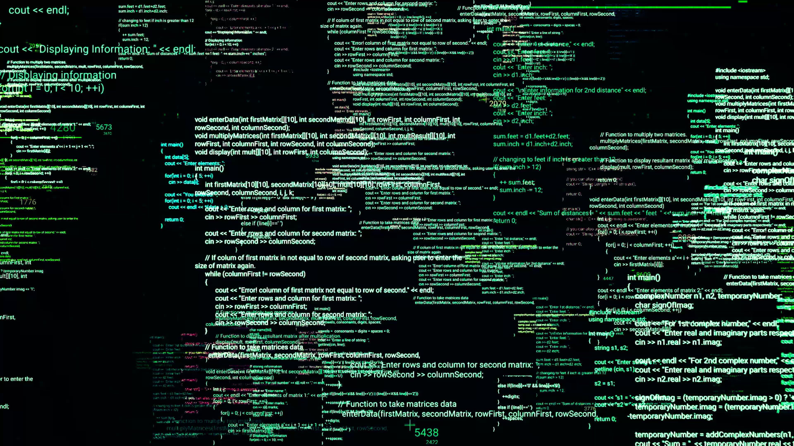
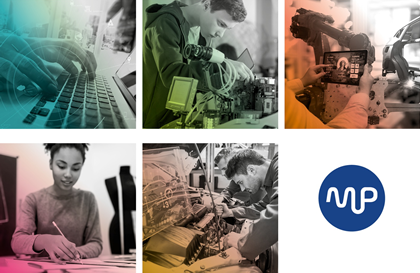

Hobby e interessi
Nel tempo libero faccio piccole attività manuali nel garage per aiutare in casa e lavoretti anche per le moto, che sono la mia più grande passione; infatti faccio molto spesso giri in moto (meteo permettendo). Adoro la musica anni 70, 80, 90 e anche alcune canzoni dei nostri giorni.
Competenze

Programmazione
Ho buone competenze informatiche, ho programmato in aluni software di
programmazione professionale come ad esempio Visual Studio e Visual Studio Code.
Conosco diversi linguaggi di programmazione e alcuni di questi sono:
- C
- C#
- HTML
- PHP
- CSS
- JAVASCRIPT
- JAVA
- PHYTON
- ASSEMBLY

Linguistiche
Ho buone capacita nel parlare e capire l'ingliese
Sistemistica
Ho buona capacità sistemistiche, riesco senza troppe difficoltà a progettare reti aziendali e datacenter.
Attività extrascolastiche
Cybersecurity
Ho partecipato al corso di cybersicurezza messo a disposizione dalla scuola Marconi Pieralisi.
Abbiamo discusso, prima di iniziare ad avventurarci sul vasto e pericoloso mondo della cybersicurezza,
sull'etica ti questo corso; poi abbiamo affrontato alcuni casi di attacco a database e reti.
Alla fine del corso, abbiamo svolto una prova pratica su quello che abbiamo imparato durante il corso,
provando ad "hackerare" una macchina virtuale.
Realtà virtuale
Ho partecipato ad un corso pomeridiano offerto dalla scuola per farmi vedere il mondo della realtà virtuale e la programmazione che c'è dietro.
Visualizza certificato
Orientamento
Attivita di oriantamento in ausilio per informare i ragazzi del terzo anno
delle scuole secondare di secondo grado, raccontando e descrivendo i vari percorsi di studio,
nello specifico l'indirizzo informatico.
Descrivendo il percorso di studio abbiamo inoltre dimostrato diversi progetti che sono state fatti
dalle classi degli anni precedenti sempre inerenti all'indirizzo informatico.
TreeCamp
Ho fatto un'esperienza da animatore al centro estivo TreeCamp nel periodo estivo, più precisamente nelle estati 2021, 2022